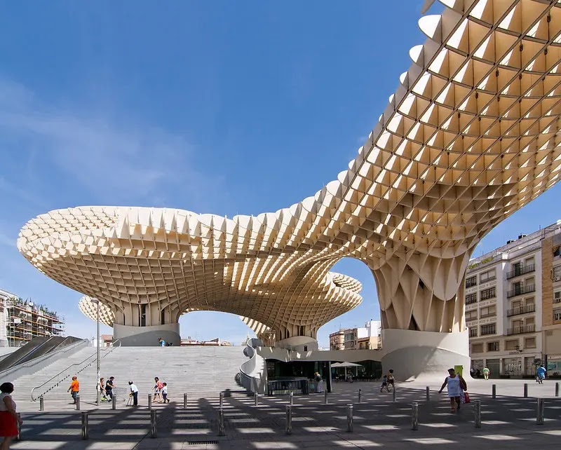

Arquitectura Verde
Este tipo de arquitectura se centra en el uso de materiales ecológicos, el aprovechamiento de energías renovables y la integración de espacios verdes en el diseño urbano.
Explorando las diferentes clases de arquitectura y su impacto en el medio ambiente
La arquitectura contemporánea es un enfoque de diseño que se caracteriza por su innovación, funcionalidad y, cada vez más, su énfasis en la sostenibilidad. Con la urbanización y el cambio climático en aumento, los arquitectos de hoy buscan soluciones que reduzcan el impacto ambiental y promuevan un estilo de vida sostenible.
Este tipo de arquitectura se centra en el uso de materiales ecológicos, el aprovechamiento de energías renovables y la integración de espacios verdes en el diseño urbano.
Diseños que aprovechan las condiciones climáticas del entorno para mejorar la eficiencia energética del edificio, reduciendo así la necesidad de sistemas de climatización artificial.
Utiliza herramientas digitales avanzadas para crear estructuras complejas y eficientes que pueden adaptarse mejor a sus entornos y reducir el consumo de recursos.
Consiste en construir con módulos prefabricados, lo que reduce los residuos de construcción y permite una mayor flexibilidad y eficiencia en el uso de materiales.
La arquitectura contemporánea ha evolucionado para incorporar principios de sostenibilidad, como la eficiencia energética, el uso de materiales reciclados y la reducción de la huella de carbono. Al implementar estas prácticas, la arquitectura puede contribuir a la lucha contra el cambio climático y mejorar la calidad de vida de las personas.
La arquitectura contemporánea y la sostenibilidad son conceptos inseparables en el mundo actual. A medida que avanza la tecnología, los arquitectos tienen más herramientas para diseñar edificios que sean funcionales y respetuosos con el medio ambiente. Así, la arquitectura se convierte en un pilar para la construcción de un futuro más sostenible.